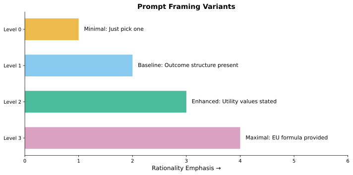

Prompt Framing and LLM Rationality
Application Report 1: Background and Motivation
applications
llm
prompt-framing
Investigating whether explicit rationality cues in prompts affect LLM sensitivity to subjective expected utility maximization, using contextualized embeddings to capture how framing shapes internal representations.
0.1 Introduction
This report series applies the SEU sensitivity framework developed in the Foundations reports to a novel research question: Does prompting an LLM with explicit rationality cues change its decision-making behavior?
Large Language Models (LLMs) have demonstrated impressive capabilities across a wide range of tasks, but their decision-making behavior remains poorly understood. When faced with choices involving uncertain outcomes, do LLMs behave rationally in the sense of maximizing expected utility? And crucially, can we induce more rational behavior through careful prompt engineering?
NoteCore Research Question
When prompted with explicit rationality cues (e.g., “maximize expected utility”), do LLMs exhibit higher sensitivity (α) to SEU-optimal choices compared to minimal prompts?
0.2 Theoretical Framework
0.2.1 The SEU Sensitivity Model
Our foundational model (m_0) characterizes a decision maker’s choice behavior through a softmax rule:
\[ P(\text{choose } r \mid \alpha, \boldsymbol{\eta}) = \frac{\exp(\alpha \cdot \eta_r)}{\sum_{j} \exp(\alpha \cdot \eta_j)} \]
where:
- \(\eta_r\) is the expected utility of alternative \(r\)
- \(\alpha \geq 0\) is the sensitivity parameter
The sensitivity parameter α has a clear interpretation:
| α Value | Interpretation |
|---|---|
| α = 0 | Random choice (uniform distribution) |
| α = 1 | Moderate sensitivity to utility differences |
| α → ∞ | Deterministic utility maximization |
By fitting this model to LLM choice data under different prompt conditions, we can quantify whether rationality framing affects the sensitivity parameter.
0.2.2 Prompt Framing Hypothesis
Our hypothesis is that prompt framing affects α through two potential mechanisms:
- Attention mechanism: Explicit rationality cues may focus the model’s attention on decision-relevant features
- Representation shift: The same alternatives may be represented differently when embedded in rationality-framed contexts
To capture the second mechanism, we introduce contextualized embeddings: rather than embedding claims in isolation, we embed them within the full prompt context. This allows the same claim to have different representations under different framings.
0.3 Experimental Design
0.3.1 Prompt Variants
We designed four prompt variants with increasing levels of rationality emphasis:
0.3.2 Domain: Insurance Claims Triage
We use insurance claims triage as our decision domain:
- Task: Select which flagged claim to send for human investigation
- Alternatives: 2-4 claims per decision problem
- Outcomes (K=3):
- Both expert judges agree the selection warrants investigation (utility = 1.0)
- One judge agrees, one disagrees (utility = 0.5)
- Neither judge agrees (utility = 0.0)
This domain was chosen because:
- It involves genuine uncertainty about outcomes
- The claims vary in “suspiciousness” (providing natural variation in expected utility)
- The task is interpretable to LLMs trained on diverse text
0.3.3 Contextualized Embeddings
A key methodological innovation is our use of contextualized embeddings. Rather than computing a single embedding for each claim, we compute embeddings within the context of each prompt variant:
Embedding(claim | minimal_prompt) ≠ Embedding(claim | maximal_prompt)This captures the hypothesis that the same claim is represented differently when framed with explicit rationality cues. The embedding serves as the feature vector (ψ) in our SEU model.
0.4 Study Overview
The study pipeline consists of:
- Problem Generation: Create decision problems by sampling claims
- Embedding Generation: Compute contextualized embeddings for all variant-claim pairs
- Choice Collection: Present problems to LLM under each framing, collect choices
- Model Fitting: Fit m_0 model separately for each variant
- Analysis: Compare α estimates across variants
TipKey Insight
If prompt framing affects rationality, we expect:
- Higher α for maximal/enhanced prompts (more sensitivity to EU-optimal choices)
- Lower α for minimal prompts (choices less tied to EU ranking)
A null result (similar α across variants) would suggest LLM decision-making is relatively robust to framing.
0.5 What’s Next
In Report 2: Pilot Study, we present results from our first pilot study, including:
- Cost estimation and API usage
- Model fitting results for each variant
- Discovery of methodological challenges (position bias)
- Lessons learned for study design refinement
Reuse
Citation
BibTeX citation:
@online{helzner2026,
author = {Helzner, Jeff},
title = {Prompt {Framing} and {LLM} {Rationality}},
date = {2026-02-16},
url = {https://jeffhelzner.github.io/seu-sensitivity/applications/prompt_framing_study/01_background.html},
langid = {en}
}
For attribution, please cite this work as:
Helzner, Jeff. 2026. “Prompt Framing and LLM Rationality.”
SEU Sensitivity Project. February 16, 2026. https://jeffhelzner.github.io/seu-sensitivity/applications/prompt_framing_study/01_background.html.